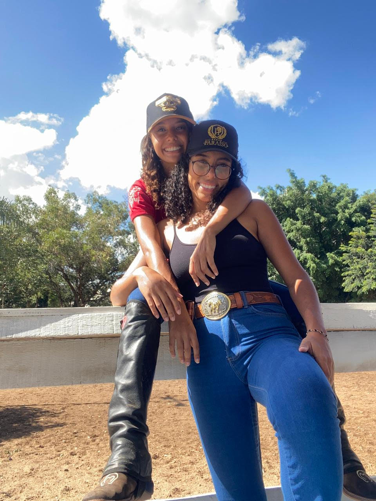

Eu nunca poderia imaginar que aquela menina que eu só pensava que iria dar uns beijinhos fosse hoje a mulher que eu vou casar, que eu vou ter filhos e que estou construindo um futuro.
Estou fazendo esse texto aqui pois quero te mostrar que você faz parte de cada parte da minha vida.
Eu penso em você quando estou programando, quando estou estudando, quando estou jogando vôlei, quando estou na academia, quando estou trabalho, indo pro trabalho ou indo comprar um pão. Você é a primeira pessoa que penso quando acordo e a última que penso quando vou dormir, além de ser a única mulher que está nos meus sonhos.
Quero que você se lembre que esses são os primeiros 6 meses do resto das nossas vidas. Quero que se lembre a todo momento, que estarei aqui.
Sei que você está passando por algumas turbulências e você não está sozinha nisso tudo. Eu estou aqui com o único e exclusivo objetivo que é te fazer a mulher mais feliz que possa existir em todo mundo.
Quando eu falo que você é o amor da minha vida vida, eu não falo da boca pra fora. Você é a mulher da minha vida e para a minha vida.
Nunca amei ninguém assim. Conheci o amor puro e sincero naquele dia 29 de outubro de 2022 e soube que eu era a mulher mais feliz do universo quando você me pediu em namoro naquele dia 04/12.
Eu vejo a vida mais colorida, me da vontade de viver, de trabalhar, de rezar, de agradecer, de descobrir, de sentir, da vontade de gritar pros quatro cantos que eu te amo e que eu vou casar com a mulher mais incrível que já existiu nesse mundo.
Eu quero te agradecer por cada momento que você me fez sentir viva, por cada momento que você me olhou no olho e fez eu me sentir amada, por cada momento que você me abraçou e fez eu me sentir segura, por cada momento que você deitou no meu colo e fez eu me sentir sortuda, por cada momento que você me beijou e fez eu me sentir ardente.
Obrigada a Deus que me deu o melhor presente que alguém poderia receber: VOCÊ.
Eu te amei ontem milhões de vezes menos que eu te amo hoje, e te amarei amanhã milhões de vezes mais do que eu te amo hoje!
Não tenho mais palavras pra expressar o que eu sinto quando penso em você.
Obrigada, meu amor. Obrigada por mais um mês. Obrigada por ser minha companheira nessa jornada que chamamos de vida.
EU
TE
AMO
❤️❤️❤️❤️❤️❤️

Com todo amor, da sua Lulu!